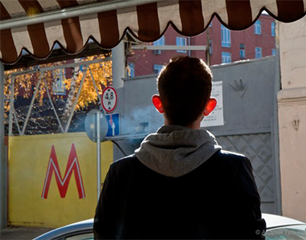

ЖИЗНЬ В ДЕТСКОМ ДОМЕ
Есть такие обывательские представления, что детям в детском учреждении одиноко, грустно и не хватает общения. И вот стоит нам начать ходить туда, мы устроим детям общение, и их жизнь станет более радостной. Когда же люди действительно начинают посещать детский дом, они видят, что проблемы у детей гораздо более глубокие и порой даже пугающие. Кто-то перестает ходить, кто-то продолжает, пытаясь изменить ситуацию, кто-то понимает, что для него единственно возможный выход.Есть такие обывательские представления, что детям в детском учреждении одиноко, грустно и не хватает общения. И вот стоит нам начать ходить туда, мы устроим детям общение, и их жизнь станет более радостной. Когда же люди действительно начинают посещать детский дом, они видят, что проблемы у детей гораздо более глубокие и порой даже пугающие. Кто-то перестает ходить, кто-то продолжает, пытаясь изменить ситуацию, кто-то понимает, что для него единственно возможный выход...